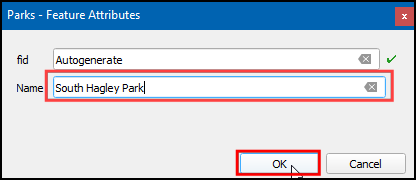
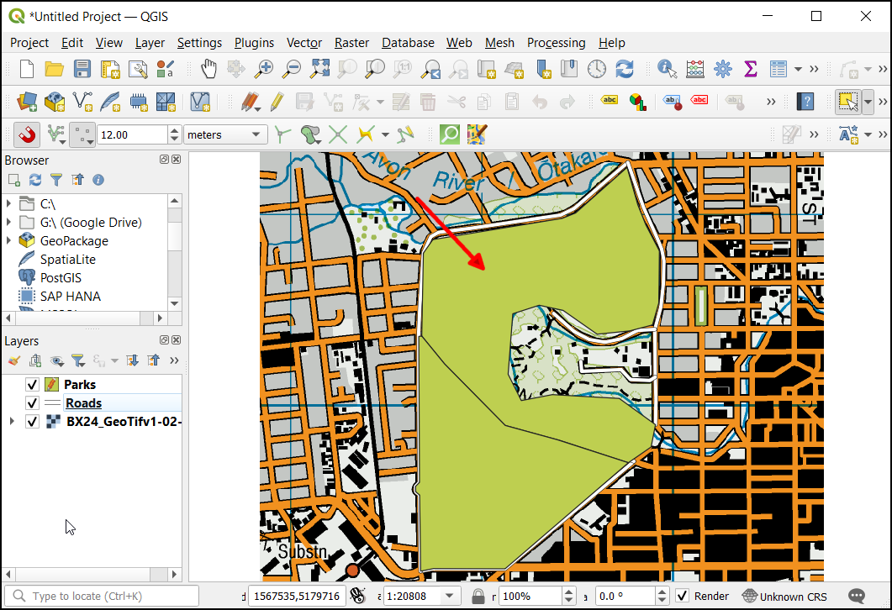

Locating Nearest Facility with Origin-Destination Matrix (QGIS3)¶
In the previous tutorial, Basic Network Visualization and Routing (QGIS3), we learned how to build a network and calculate the shortest path between 2 points. We can apply that technique to many different types of network-based analysis. One such application is to compute Origin-Destination Matrix or OD Matrix. Given a set of origin points and another set of destination points, we can calculate the shortest path between each origin-destination pairs and find out the travel distance/time between them. Such analysis is useful to locate the closest facility to any given point. For example, a logistics company may use this analysis to find the closest warehouse to their customers to optimize delivery routes. Here we use the Distance Matrix algorithm from QGIS Network Analysis Toolbox (QNEAT3) plugin to find the nearest health facility to each address in the city.
Σημείωση
This tutorial shows how to use your own network data to compute an origin-destination matrix. If you do not have your own network data, you can use ORS Tools Plugin and algorithm to do a similar analysis using OpenStreetMap data. See Service Area Analysis using Openrouteservice (QGIS3) to learn how to use ORS Tools plugin.
Overview of the task¶
We will take 2 layers for Washington DC - one with points representing addresses and another with points representing mental health facilities - and find out the facility with the least travel distance from each address.
Other skills you will learn¶
Extract a random sample from a point layer.
Use Virtual Layers to run SQL query on a QGIS layer.
Get the data¶
District of Columbia government freely shares hundreds of datasets on the Open Data Catalog.
Download the following data layers as shapefiles.
For convenience, you may directly download a copy of the datasets from the links below:
Adult_Mental_Health_Providers.zip
Data Source: [DCOPENDATA]
Setup¶
Visit . Select :guilabel:` All` Search for QNEAT3 plugin and install it. Click Close.

Procedure¶
Locate the downloaded
Roadway_Block-shp.zipfile in the Browser panel. Expand it and drag theRoadway_Block.shpfile to the canvas. Similarly, locate theAdult_Mental_Health_Providers.zipfile, expand it and addAdult_Mental_Health_Providers.shpto the canvas.

Next, locate the
Address_Points.zipfile, expand it and add theAddress_Points.shp. You will see a lot of points around the city. Each point represents a valid address. We will select 1000 points randomly. This technique is called random sampling. Go to .

Search for and locate the algorithm.

Select
Address_Pointsas the Input layer,Number of featureas the Method and, enter1000in the Number/percentage of features. In the Extracted (random) choose the...and click Save to a file. Now choose the directory and enter the name asaddress_point_subset.shpand click Run.

Σημείωση
As the algorithm will extract 1000 random points from the given data set, to replicate the exact points used in this exercise you can download the subset file which we got during the execution of the algorithm here address_point_subset.zip . After downloading load address_point_subset.shp layer into QGIS.
A new layer
address_point_subsetwill be added to the Layers panel, you can turn off the visibility ofAddress_Pointsaddress points layer.

Right-click on the
address_point_subsetlayer and select Rename layer.

Let’s rename this layer as
origin_points. Similarly, rename theAdult_Mental_Health_Providerslayers representing the health facilities asdestination_points. Naming the layers this way makes it easy to identify them in subsequent processing.

Locate the algorithm. If you do not see this algorithm in the toolbox, make sure you have installed the QNEAT3 plugin.

This algorithm helps find the distances along with the network between selected origin and destination layers. Select
Roadway_Blockas the Network layer. Selectorigin_pointsas the From-Points layer andOBJECTID_1as the Unique Point ID field. Similarly, setdestination_pointsas the To-Points Layer andOBJECTIDas the Unique Point ID field. Set the Optimization Criterion asShortest Path (distance optimization).

As many streets in the network are one-way, we need to set the Advanced parameters to specify the direction. See Basic Network Visualization and Routing (QGIS3) for more details on how these attributes are structured. Choose
SUMMARYDIRas the Direction field. EnterOBas the Value for the forward direction,IBas the Value for backward direction, andBDas the Value for the both direction. Set the Topology tolerance as0.0000150. Keep other options to their default values and click Run.

A new table layer called
Output OD Matrixwill be added to the Layers panel. Right-click and select Open Attributes Table. You will see that the table contains 13000 rows. We had 13 origin points and 1000 destination points - so the output contains 13x1000 = 13000 pairs of origins and destination. Thetotal_costcolumn contains distance in meters between each origin point to every destination point.

For this tutorial, we are interested in only the destination point with the shortest distance. We can create a SQL query to pick the destination with the least
total_costamong all destinations. Go to .

Search for and locate the , select
...in Additional input data sources check the Output OD Matrix and, click OK. Now click the Summation under SQL query.

Enter the following query in SQL query dialog box. Enter
geometryas the Geometry field and, selectLineStringas the Geometry type. Click Run.
select origin_id, destination_id, min(total_cost) as shortest_distance, geometry from input1 group by origin_id
A new virtual layer
SQL Outputwill be added to the Layers panel. This Layer has the result of our analysis. Nearest Adult mental health center for each of the 1000 origin points. Let’s try a few different ways to visualize and validate these results.

To validate this let us build the Shortest path. The point (OBJECTID_1 = 853046) is visually near to Health center (OBJECTID = 3), but from the SQL query it is connected to health center (OBJECTID = 9). Let’s validate this by finding the actual distance between these origins and destination. First, let’s run the shortest path algorithm on 1 pair. Locate the algorithm and launch it.

Select
Roadway_Blockas the Network Layer. To pick a start and endpoint. You can click the … button next to the Start point and click on the origin point (OBJECTID_1 = 853046) in the canvas. Similarly, select the destination point (OBJECTID = 3) as the End point. Keep the Optimization Criterion asShortest Path (distance optimization). Expand the Advanced parameter section. ChooseSUMMARYDIRas the Direction field. EnterOBas the Value for forward direction andIBas the Value for backward direction. Set the Topology tolerance as0.000015. Keep other options to their default values and click Run. Now change the destination point (OBJECTID = 9) in the End point and click Run

Two new layers
Shortest Path Layerwill be added to the Layers panel. You will see that although the destination point (OBJECTID = 9) visually is closed to the origin point, the actual distance is longer when compared to the destination point (OBJECTID = 3).

Note that even though the lines connecting the origin and destination is a straight-line, the destination was found using the distance along with the network. It will be much useful visualization to show the actual shortest-path between each origin-destination. As of now, there is no easy way to generate the shortest-path between multiple origin-destination pairs the way we generated the distance matrix. But I will demonstrate a way to use some python scripting to generate this visualization. First, let’s run the shortest path algorithm on 1 pair. Locate the algorithm and launch it.

In the Shortest Path (Point to Point) dialog, select
Roadway_Blockas the Network Layer. Keep the Optimization criteria as Shortest Path (distance optimization). Next we need to pick a start and end point. You can click the … button next to Start point and click on the origin point in the canvas. Similarly select the destination point as the End point. Expand the Advanced parameter section. ChooseSUMMARYDIRas the Direction field. EnterOBas the Value for forward direction andIBas the Value for backward direction. In Topology tolerance enter0.000015. Keep other options to their default values and click Run.

A new layer
Shortest PathLayer will be added to the Layers panel. You will see that this path follows the network rather than connecting the origin and destination with a straight line. The reason we ran the algorithm on 1 pair is to easily identify the parameter values that we can use in our script. SelectShortest Path layer, right-click and select Remove Layer. Click the History button in the Processing Toolbox.

In the History dialog, Select the latest command(command used for Shortest path). This command displays all the parameters and their values that we used. We can now take these values and put them in a script that can allow us to run this command on many origin-destination pairs. Click Close.

In the Processing Toolbox, click the scripts button and select Create New script.

In the Processing Script Editor, copy/paste the below code. Save the file as
get_routes_from_matrix.py. Now close the Processing Script Editor. If you are using a different dataset than the one used in this tutorial, you will have to update the script with the parameter values from step 22.
import requests import processing from PyQt5.QtCore import QCoreApplication from qgis.core import (QgsProcessing, QgsProcessingAlgorithm, QgsProcessingParameterFeatureSource, QgsProcessingParameterFeatureSink, QgsFeatureSink) class MatrixToRoutes(QgsProcessingAlgorithm): """Creats Routes from Distance Matrix""" NETWORK = 'NETWORK' MATRIX = 'MATRIX' OUTPUT = 'OUTPUT' def initAlgorithm(self, config=None): self.addParameter( QgsProcessingParameterFeatureSource( 'NETWORK', self.tr('Network Layer'), types=[QgsProcessing.TypeVectorLine] ) ) self.addParameter( QgsProcessingParameterFeatureSource( 'MATRIX', self.tr('Distance Matrix Layer'), types=[QgsProcessing.TypeVectorLine] ) ) self.addParameter( QgsProcessingParameterFeatureSink( self.OUTPUT, 'Network Routes', QgsProcessing.TypeVectorLine ) ) def processAlgorithm(self, parameters, context, feedback): network = self.parameterAsString(parameters, self.NETWORK, context) matrix = self.parameterAsSource(parameters, self.MATRIX, context) sink, dest_id = self.parameterAsSink( parameters, self.OUTPUT, context, matrix.fields(), matrix.wkbType(), matrix.sourceCrs() ) # Compute the number of steps to display within the progress bar and # get features from source total = 100.0 / matrix.featureCount() if matrix.featureCount() else 0 features = matrix.getFeatures() coordinate_list = [] for current, f in enumerate(features): # Stop the algorithm if cancel button has been clicked if feedback.isCanceled(): break line = f.geometry().asPolyline() origin_coords = line[0].x(), line[0].y() destination_coords = line[1].x(), line[1].y() feedback.setProgress(int(current * total)) params = { 'INPUT':network, 'START_POINT':'{},{}'.format(origin_coords[0], origin_coords[1]), 'END_POINT':'{},{}'.format(destination_coords[0], destination_coords[1]), 'STRATEGY':0, 'ENTRY_COST_CALCULATION_METHOD':0, 'DIRECTION_FIELD':'SUMMARYDIR', 'VALUE_FORWARD':'OB', 'VALUE_BACKWARD':'IB', 'VALUE_BOTH':'', 'DEFAULT_DIRECTION':2, 'SPEED_FIELD':None, 'DEFAULT_SPEED':5, 'TOLERANCE':0, 'OUTPUT':'memory:'} route_layer = processing.run("qneat3:shortestpathpointtopoint", params)['OUTPUT'] if route_layer: # We expect only 1 feature in the output, so use next() to get the first item route_f = next(route_layer.getFeatures()) output_geom = route_f.geometry() f.setGeometry(output_geom) sink.addFeature(f, QgsFeatureSink.FastInsert) feedback.setProgressText('Processed feature {}'.format(current)) return {self.OUTPUT: sink} def name(self): return 'routes_from_matrix' def displayName(self): return self.tr('Get Routes from Matrix') def shortHelpString(self): return self.tr('Creates Route Layer from the result of Distance Matrix algorithm') def group(self): return self.tr(self.groupId()) def groupId(self): return '' def tr(self, string): return QCoreApplication.translate('Processing', string) def createInstance(self): return MatrixToRoutes()
Now we can test the script. Select a few connections for the layer
SQL Outputfor which you want the actual routes computed. In the Processing Toolbox, a new dropdown Scripts will be added. Click on it and selectGet Routes from Matrix.

Σημείωση
This script needs to compute the network graph for each iteration and thus quite slow. If you have a lot of origin-destination pairs, it can take time.
In the Network Layer select
Roadway_Blockand in the Distance Matrix layer selectSQL Outputthen check selected features only. Click Run.

A new layer
Network Routeswill be added to the Layers panel. This will contain the actual route to the destination.
